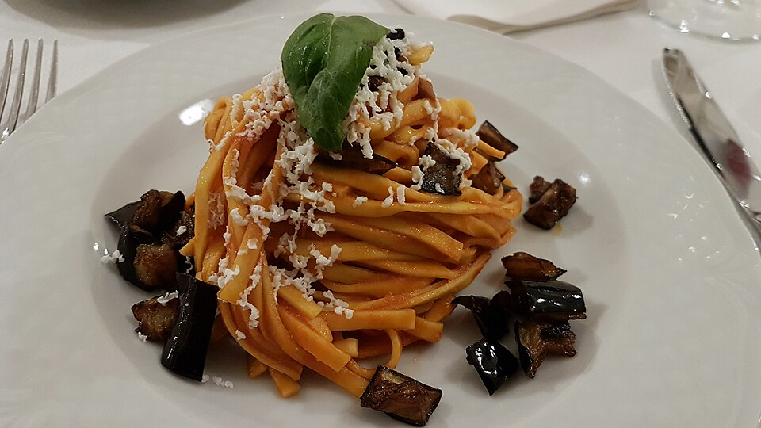

Home
Pasta alla Norma

Description
The most iconic Sicilian pasta, Pasta alla Norma, is a celebration of sun-soaked Mediterranean flavors.
With its vibrant colors and comforting richness, it embodies the warm, generous spirit of Sicilian cooking.
Ingredients
- Short pasta (traditionally macaroni, rigatoni, or penne)
- Eggplant
- Tomato passata (or peeled tomatoes, crushed)
- Garlic
- Extra virgin olive oil
- Fresh basil leaves
- Ricotta salata
Steps
- Cut the eggplant into medium cubes or slices. Sprinkle with salt and let rest in a colander for 30 to 40 minutes to draw out bitterness. Pat dry with kitchen paper
- Heat olive oil in a large pan over medium-high heat. Fry the eggplant until golden and soft. Remove and drain on kitchen paper.
- In the same pan (add a little more oil if needed), sauté the garlic gently until fragrant. Add the tomato passata, season with salt, and let simmer for about 15 to 20 minutes. Stir in a few torn basil leaves
- In the meantime, bring a large pot of salted water to a boil. Cook pasta until al dente. Reserve a little pasta cooking water before draining
- Add the drained pasta to the tomato sauce, tossing well. If the sauce feels too thick, add a splash of pasta water. Stir in most of the fried eggplant, keeping a few pieces aside for garnish
- Plate the pasta, top with the remaining eggplant, generous shavings of ricotta salata, and fresh basil. Serve immediately